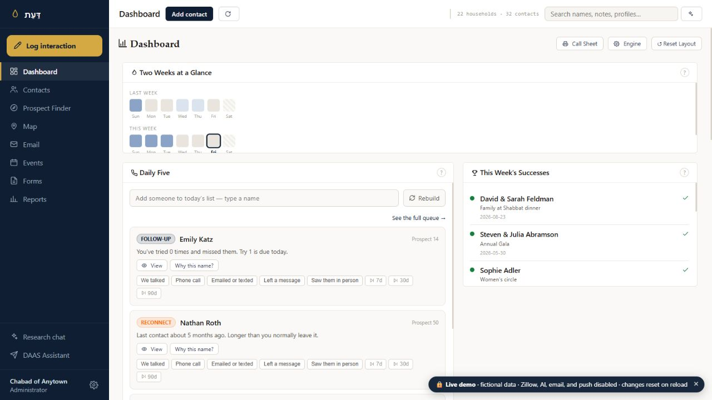
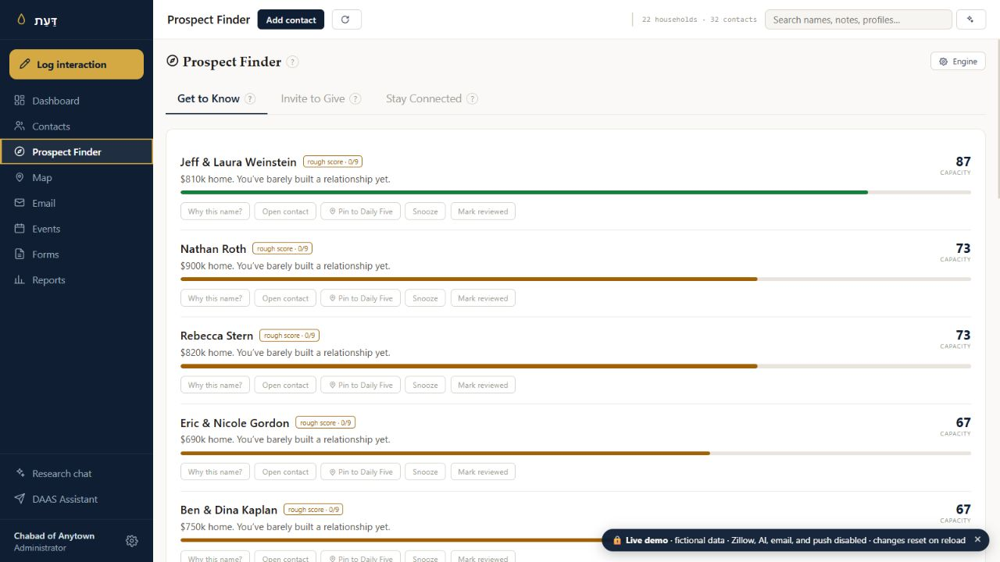
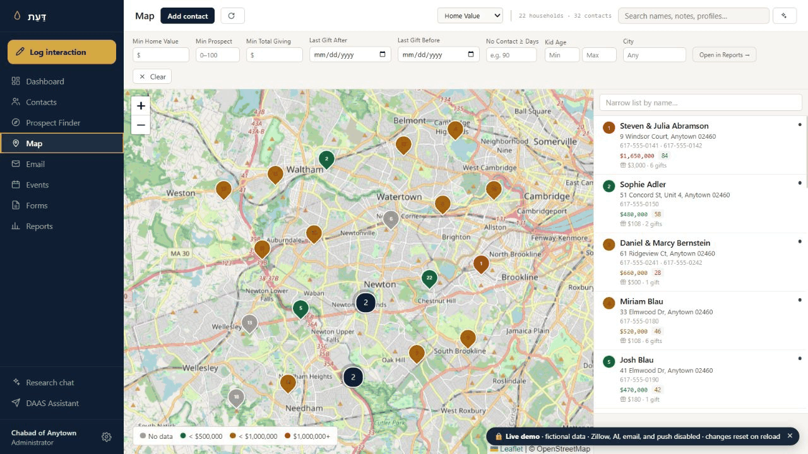
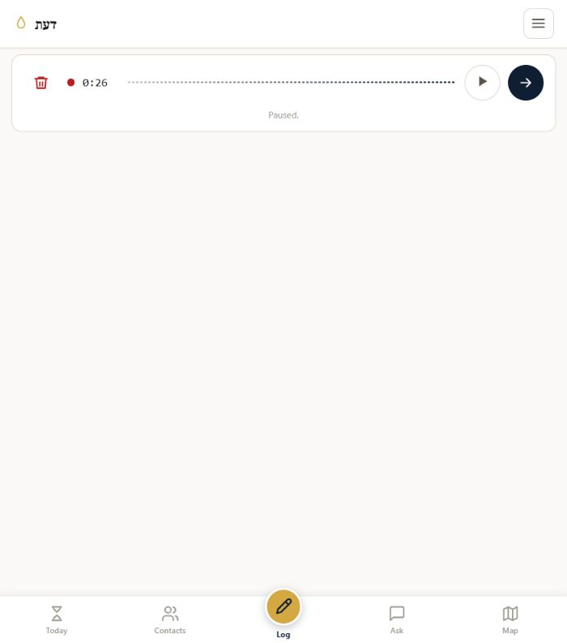
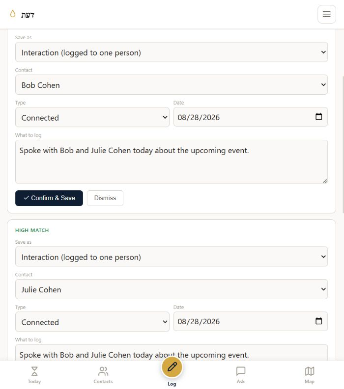
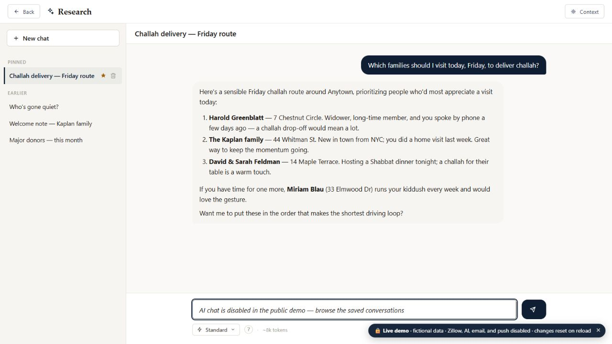
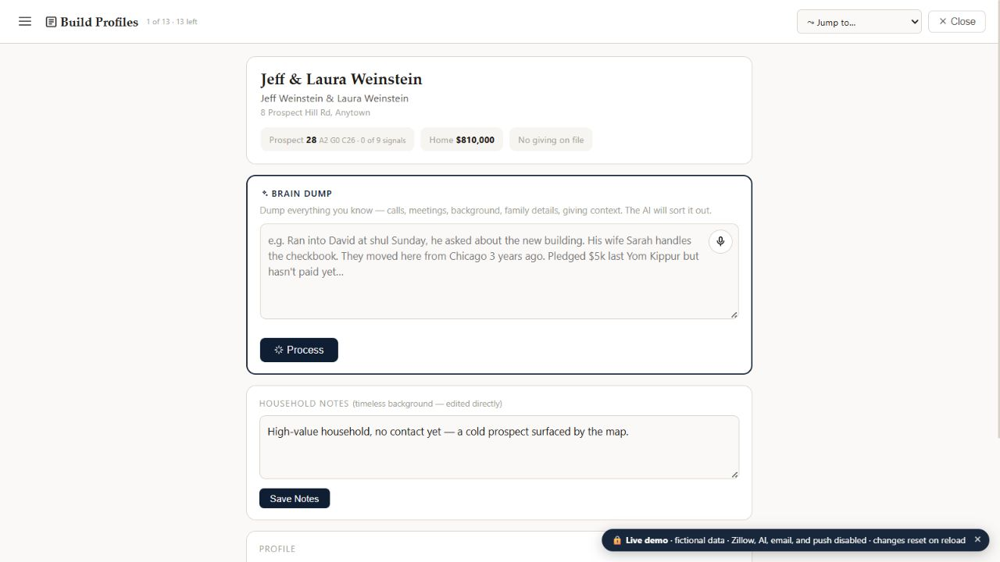
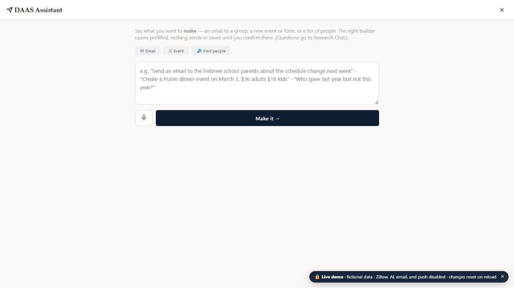
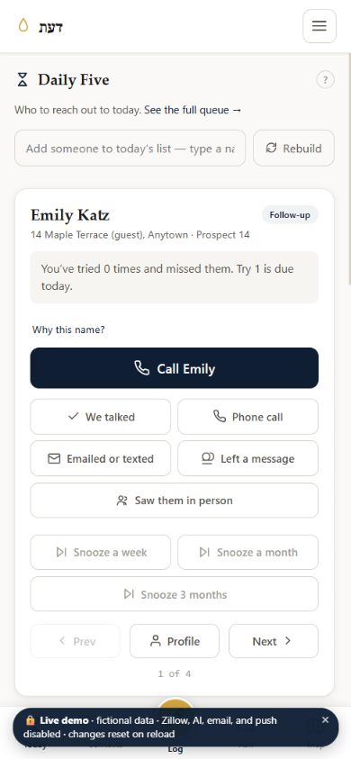

01 · Relationship Engine
Knows whom to bring forward.
Daily Five, follow-ups, and Prospect Finder run on clear signals in your CRM. You can see why someone appears and decide what the right next step is.
Manage every relationship. Capture every interaction. Find out who needs you today and which prospects are hiding in plain sight.
Smart algorithms surface the right people every day—without using your AI budget. AI is built in where it is useful. You make the decisions.
Contacts, conversations, events, giving, notes, tasks, and the small details that matter all belong in one place. DAAS turns that history into clear next steps for your community.
Not everyone needs a phone call after the same number of days. DAAS remembers the natural rhythm of every relationship: someone waiting on a follow-up, a family you have not seen in a while, a new person who needs a welcome, or a supporter ready for a conversation.
Each morning, DAAS gives you five people to reach out to, with a clear reason for each.

Prospect Finder brings together what you already know, giving history, participation, and relevant public signals: business ownership, property information, philanthropy, and community leadership.
See which relationships deserve stewardship, where someone’s giving may not reflect their capacity, and who is worth getting to know better. The score is a starting point for a relationship—not a decision made for you.

The map puts the relationships in front of you geographically. Browse your community, open a household, and see the history before you reach out.
It is especially useful on a busy day: see who is nearby, make the visit while you are in the area, and capture the interaction before it disappears.

DAAS is deliberate about where AI belongs—and where it does not.
Daily Five, follow-ups, and Prospect Finder run on clear signals in your CRM. You can see why someone appears and decide what the right next step is.
Powered by your OpenAI API key—the technology behind ChatGPT—DAAS can organize information and prepare work for you. Nothing sends or saves until you approve it.
Record a voice note. Paste an email chain. Drop in a screenshot. Photograph the note on your desk. DAAS matches the information to the correct contact and records it correctly for you to review.


Research Chat reads across the relationships you have already built: conversations, attendance, notes, giving, tasks, and more. Ask for a route to visit, a group to follow up with, or the context before an important conversation.
It gives you a useful answer grounded in your own records, so you can decide what to do with it.

Give DAAS the background you know and let it organize the relationship: family details, conversations, public information, business or community involvement, and giving context.
The result is a working profile that lets you walk into every conversation prepared—not a substitute for knowing the person yourself.

Record a voice note straight into DAAS to prepare an email, build a complicated search, or create an event. Describe what you need and DAAS opens the right tool with the work prepared.
You still review the audience, the wording, the details, and the result. AI does the clerical work. You do the human work.


After a meeting, record a voice note. Take a picture of a note. Screenshot a conversation and share it to DAAS. Capture it while it is fresh.
DAAS is built to give each community control—without asking anyone to become a database administrator.
DAAS is powered by Supabase—an online database that holds all the information in your CRM. Think of it as a set of Google Sheets designed to talk to one another. You create and own the Supabase account, and you have access to it whenever you need it. You do not need to work in the database: DAAS gives you the user-friendly interface for your day-to-day work. DAAS does not access or read your CRM data.
You create your own OpenAI API key—the technology behind ChatGPT. OpenAI bills you based on how much you use it. That key powers AI features such as Quick Capture, Research Chat, Profile Builder, and the DAAS Assistant, while the relationship engine runs on clear signals in your CRM without using AI.
Email is included with DAAS. It uses Amazon SES for secure sending, and we help you verify your own domain and configure the records. Your messages come from your own email address, with separate sending and tracking for your community.
Yes. DAAS is a full CRM: create donation, registration, and event forms, then embed them on your website. When someone signs up, their information is added to DAAS automatically. Donation payments are connected to your community’s Stripe setup so gifts can be recorded with the relationship.
Still have a question? Email admin@daascrm.app.
Explore the fictional Chabad of Anytown. The demo uses the real interface and fictional data; changes reset when you refresh.
DAAS has two views. Open the demo on a desktop to see the full workspace, or use your phone—or a narrow browser window—to see the focused mobile view.
Tell us who you are and where DAAS would serve your community. We will be in touch with the next step.